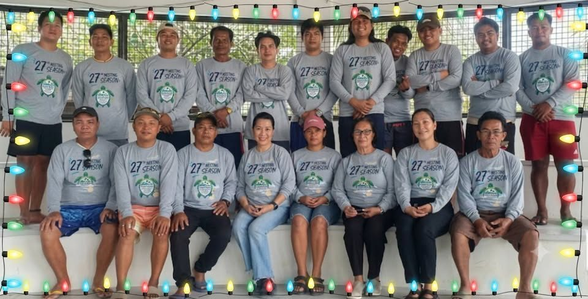
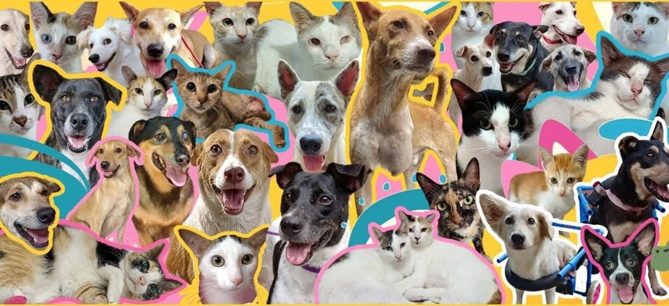
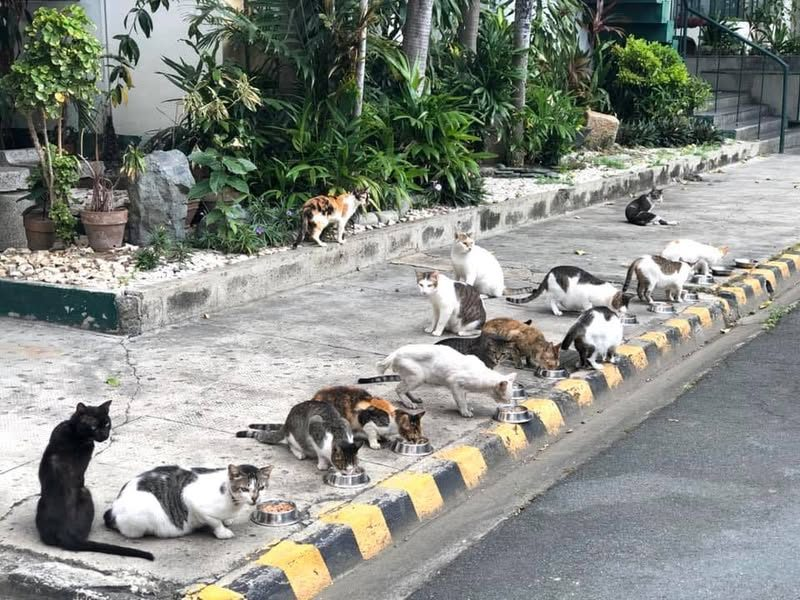
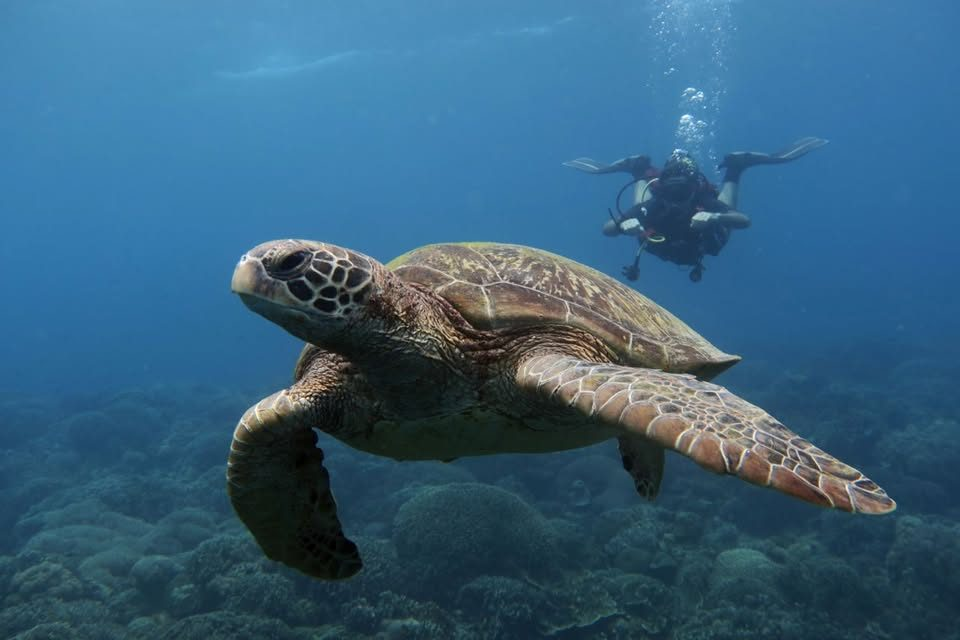
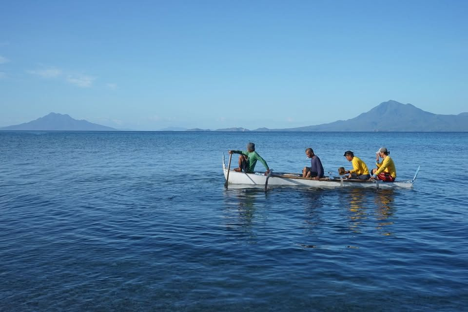
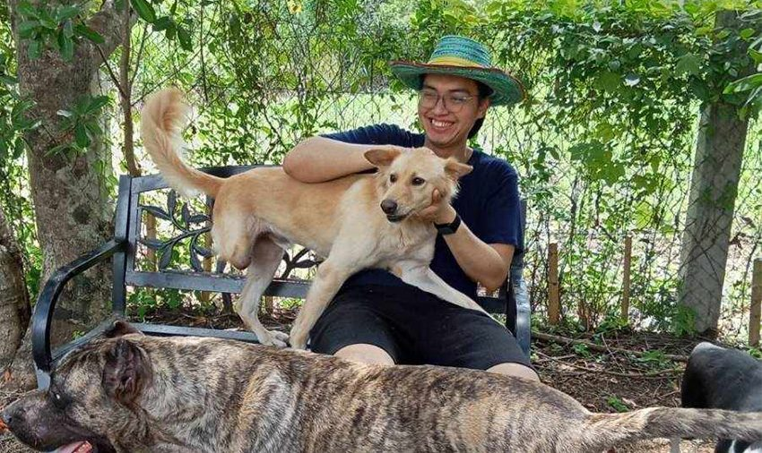

Volunteering · Animal welfare
Where to volunteer with animals in the Philippines
Shelters, rescues, sanctuaries, marine and wildlife programs across three island regions. Every listing was checked against an official website or official Facebook page before publication, and the source is linked on the entry itself.

| Luzon | — |
|---|---|
| Visayas | — |
| Mindanao | — |
| Total | — |
01 — Directory
Every listing we could verify
Search by name, city or animal, then narrow by region, type of work, or the animals you want to be around. Filters are kept in the page address, so a filtered view can be shared as a link.
Showing all 43 organizations
No entries match those filters.
Try a wider region, or clear the search box — there are 43 listings in total.
02 — Practice
How to volunteer responsibly
A little care makes you a better volunteer, and makes life easier for the people and animals already there.
-
Visit first, commit second
Ask for an orientation and a trial day before promising anything recurring. Shelters would rather you show up steadily once a month than burn out in a fortnight.
-
Ask about the commitment
Clarify hours, minimum tenure, deposits, and whether pre-exposure rabies shots are needed for direct animal care. Know the expectations before you say yes.
-
Skip wildlife tourism that exploits animals
Avoid venues that let tourists hold, ride or take selfies with wild animals, or that stage performances involving them. Ask instead how your fee or time supports genuine rescue and rehabilitation.
-
Keep a respectful distance
Follow the keepers' lead around wild and rescued animals: no flash photography, no reaching into enclosures, and never feed an animal without clearance.
-
Bring skills, not just enthusiasm
Photography, transport, spreadsheets, welding, fundraising, translation and weekend driving are all genuinely short on. Say what you're good at when you apply.
-
Adopt, foster, or donate — not just visit
If you can't give time, fostering an animal or covering a vet bill is often worth more than a single afternoon. Every organization below accepts more than one kind of help.
Plates — from the organizations themselves

Happy Animals Club, Cebu · official page ↗ 
DLSU PUSA, Manila · official page ↗ 
Marine Conservation Philippines · official page ↗ 
People and the Sea, Cebu · official page ↗
03 — Method
How this directory was built
Every organization here was found through public web research and confirmed against an
official website, an official Facebook page, or another primary source — that source is
listed on each entry. Fields that could not be verified are left blank or
null rather than guessed.
Listings change: pages get taken down, programs pause, email addresses go stale. Please confirm details directly with the organization before you travel or commit your time.

What's in a listing
- Where it is — region, city, province
- What animals it works with
- Real volunteer activities
- How to actually join
- Requirements and contact links
- A source URL and a verification date